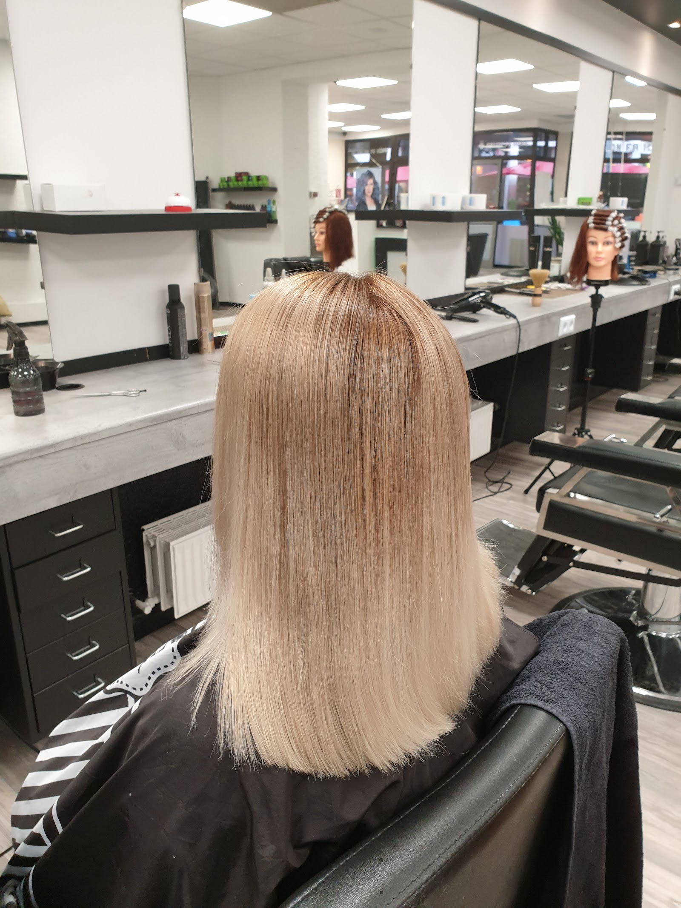
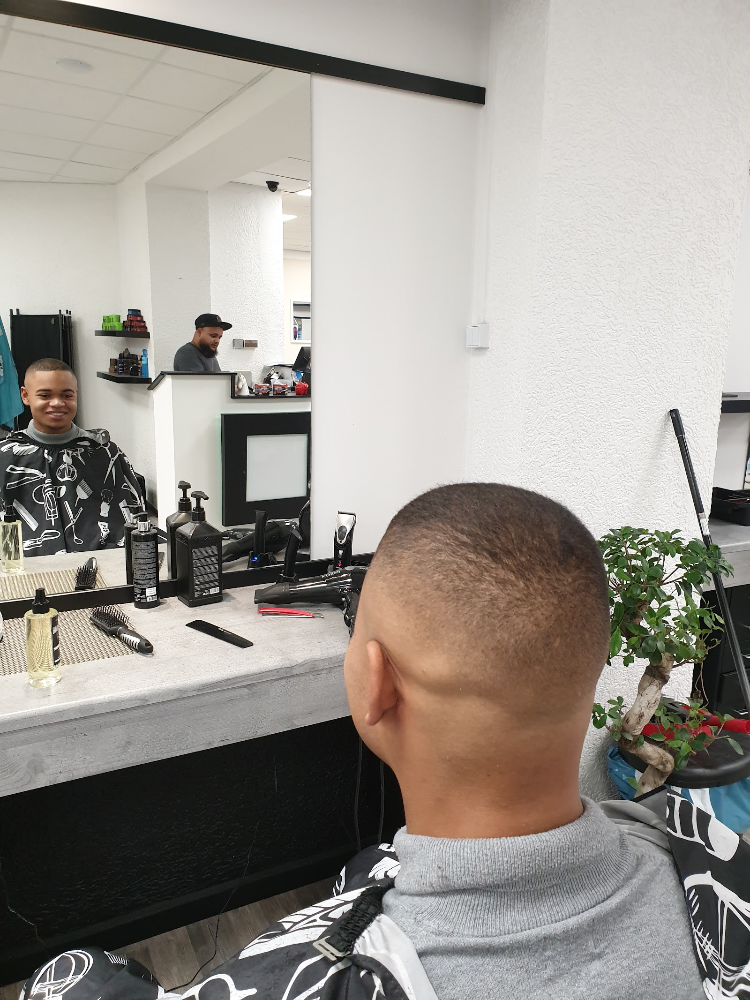
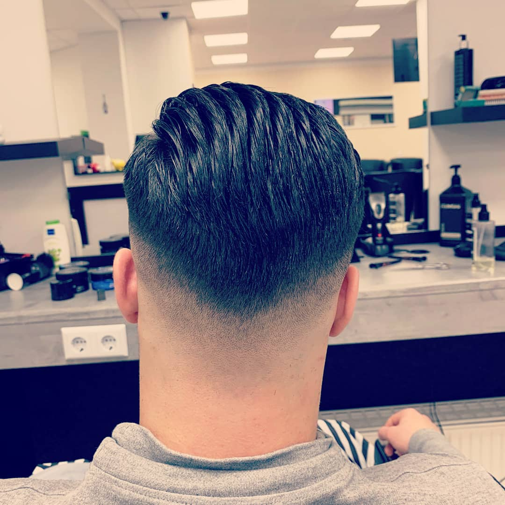
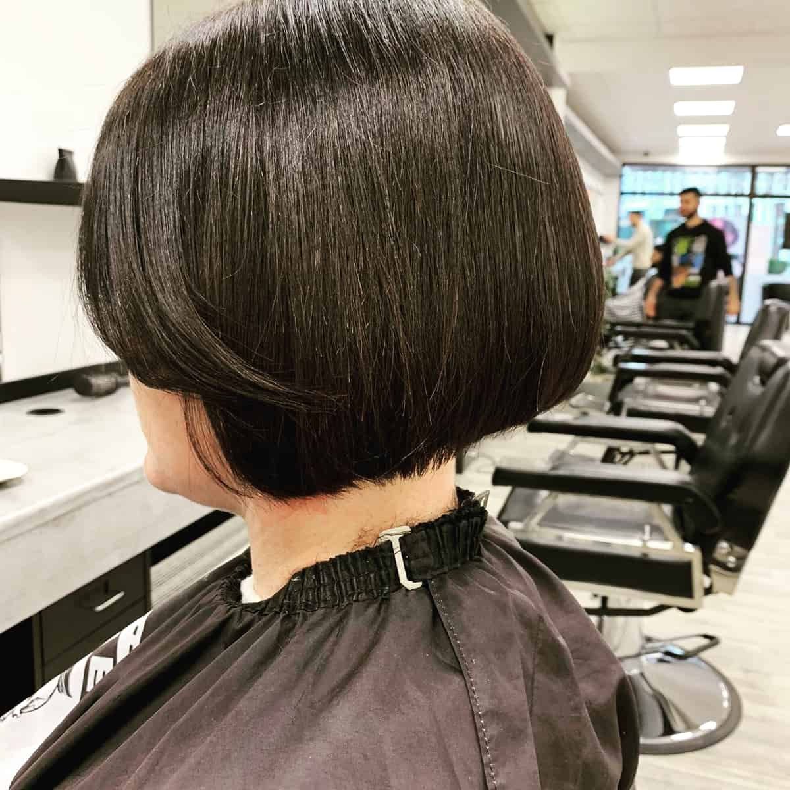

Salon FA König · Bahnhofstraße 23, Hamm
Hier sind Sie König.
Ein Rundgang durch den Salon an der Bahnhofstraße, für Damen und Herren.
oder einfach scrollen
Der Besuch · Kapitel 1 — Das Handwerk
Schnitte mit Anspruch.
Fade, Schere, Styling: 4,7 Sterne aus 74 Google-Bewertungen sprechen für die Arbeit am Stuhl.

Der perfekte Übergang, von hinten gesehen.
- Der ÜbergangVon der Haut ins Deckhaar: der Fade wächst Millimeter für Millimeter.
- Das DeckhaarMit der Schere strukturiert, fällt wie gekämmt.
- Die NackenlinieSauber gezogen, ohne harte Kante.
- Das FinishGekämmt, gelegt, fertig: eine Rückansicht zum Herzeigen.
Scrollen Sie die vier Schritte durch: Jeder zeigt, wo am Kopf er entschieden wird.

Die Karte für Herren.
Klassisch bezahlbar, vom Maschinenschnitt bis zur heißen Rasur.
Beispielpreise aus der Vorbereitung: Sie werden vor dem Livegang gemeinsam mit dem Salon final eingetragen.
Der Besuch · Kapitel 2 — Die Damen
Und die Damen?
Vom präzisen Bob bis zur Farbe: die zweite Hälfte des Salons, mit derselben Sorgfalt.

Damen im Salon FA König
Vom Bob bis zur Farbe.
Schneiden, Farbe, Hochstecken und Make-up zum Anlass, mit Beratung am Empfang.
Was die Damen erwartet
- Schneiden & Föhnen
- Farbe & Strähnen
- Dauerwelle & Styling
- Hochstecken zum Anlass
- Make-up
Die Damen-Preiskarte pflegen wir gemeinsam mit dem Salon ein, ehrlich statt geraten. Was es schon gibt: den Beleg der Kundschaft rechts.
„Direkt am Empfang wird man freundlich empfangen und auf ein heißes oder kaltes Getränk eingeladen. […] Sehr gute Herren- und Damen-Friseure. […] Meine Frau hat Haare gefärbt, geschnitten und hochgesteckt bekommen, mit Make-up. Wir beide sind sehr zufrieden und sind jetzt Stammkunden."
Was Hamm über den Salon sagt
„Sehr schöner Salon, geile Haarschnitte, echt krass, was die drauf haben. Bin mega zufrieden und würde weiterhin hingehen und empfehlen."
„War das erste Mal da. Super! Hat meine Haare so geschnitten, wie ich das haben wollte."
Der nächste Termin gehört Ihnen.
Damen & Herren an der Bahnhofstraße 23: anrufen oder per WhatsApp schreiben, der Salon meldet sich.